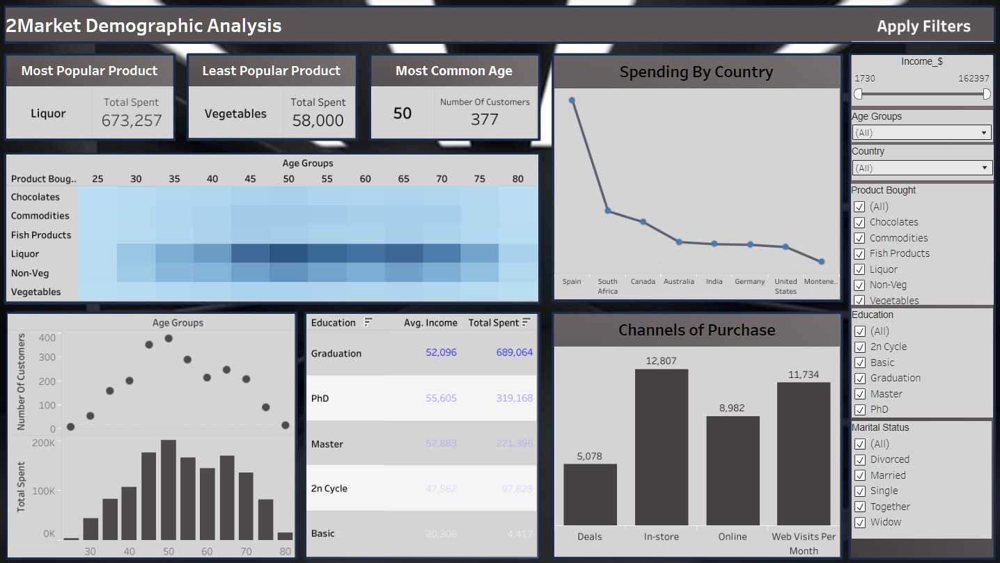
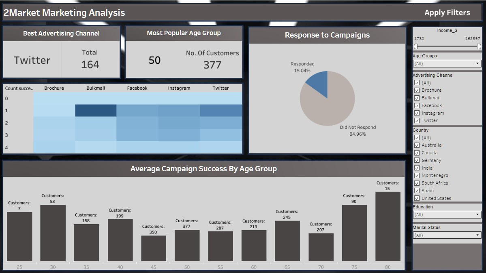
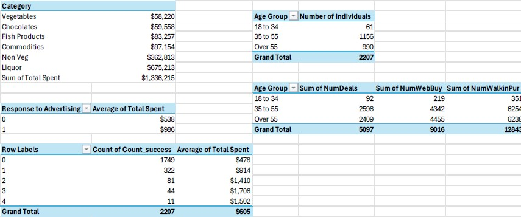
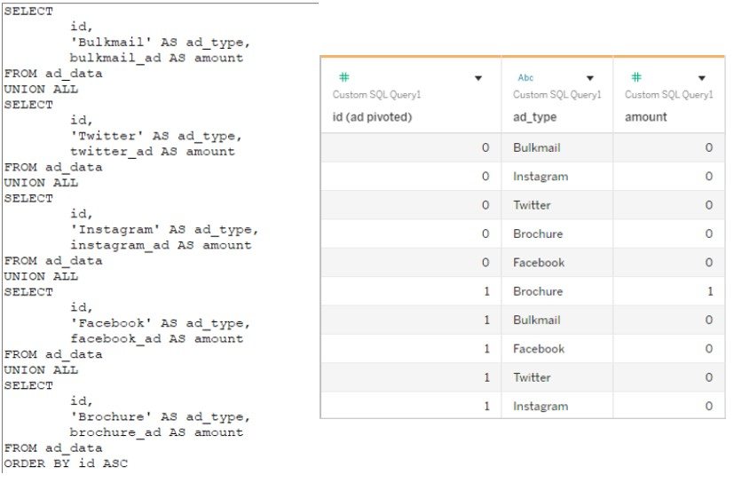

📄 Final Results
📊 Key Visualisations
Tableau Customer Demographic Dashboard
Tableau Advertising Effectiveness Dashboard
Pivot Tables Created Using Excel To Generate Initial Insights
Utilisation of PostgreSQL to Pivot Marketing Data Streamlining Visualisations.
📌 Summary of Insights
- Monthly service utilisation consistently exceeded 80% capacity.
- 90% of appointments were attended when booked.
- The total number of appointments fall during winter months.
- Public sentiment focus on AI, Jobs and Digital Health presented by Twitter data.
📢 Recommendations
- Implement measures for permanent and temporary staff to buffer peak periods.
- Use automated SMS/app reminders to remind patients of bookings and reduce no-shows.
- Redistribute staff members during periods of fewer appointments to even out the service.
- Develop tools for remote consultations, symptom-checking apps, and digital triage to reduce burden on NHS facilities.